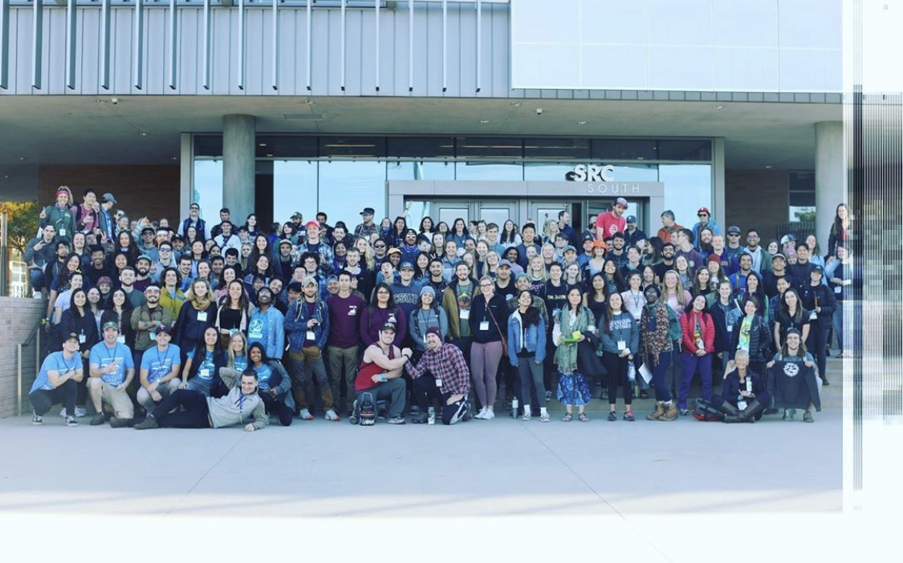
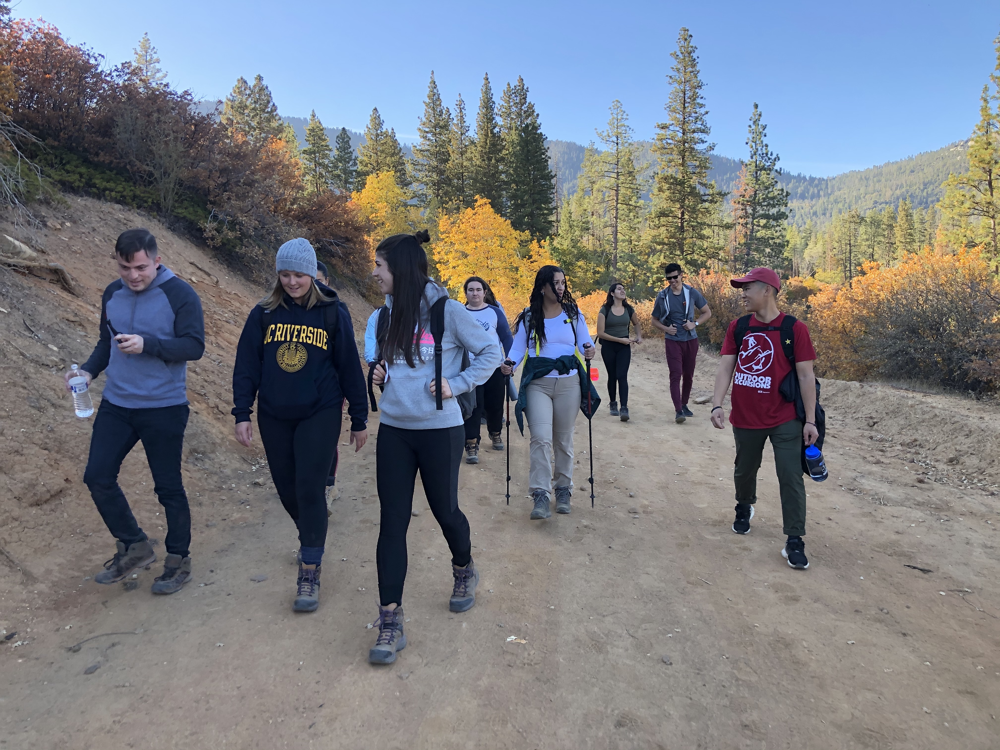

Sophia Castillo
My name is Sophia Castillo. I am a pre-med and 4th year undergraduate Biochemistry major at the University of California, Riverside. I transferred from Bakersfield Community College in 2018. I have a Biology Associates of Science from Bakersfield College. I will be graduating in June 2021 from the University of California, Riverside. I have done 2 years of education at a community college and will be doing 3 years of education at the University of California, Riverside.
As a pre-med undergraduate I try to be involved in as many medically related fields and programs as possible. I am involved in Riverside Free Clinic as we provide healthcare for underrepresented and underserved community members. I attend another free clinic in Coachella Valley, named Global Health at Home. I am a Health Scholar with the COPE solutions program at the Riverside Community Hospital and have been on various hospitals including the Surgical Intensive Care Unit and the Emergency Department.
In terms of medical certifications, I am Wilderness First Responder certified which means I am also CPR certified and can help in backcountry medical emergencies. I am a Certified Phlebotomy Technician as well. I am bilingual as I speak Spanish as well as English. I am proficient in medical programs such as E Clinical.
I have work experience as I was a medical assistant and worked in a back office setting in a primary care office. I was also a scribe at an Urgent care and continue to contribute my time every summer back in the home town of Bakersfield, CA.
Along with attending medically related organizations I am also involved in on campus organizations. I currently work at Outdoor Excursions, part of the Student Recreation Center at the University of California, Riverside. I am part of the Chicano Student Programs as I am a mentor for incoming freshman as well as transfer students. I am a learning assistant for an organic chemistry class with Dr. Casselman. I am also a part of Tennis on Campus at the University of California Riverside as I have been playing tennis for 10 years.
Experience
Trip Leader
• Certified to lead backcountry trips throughout California
• Handle payments and rental contracts
• Awarded Employee of the Month within one month of working
Medical Assistant
• Scribed with physician when establishing patient treatment
• Assisted in procedures alongside the physicians as well as procedures on my own that include EKGs, ear lavages, medication administrations, vaccinations and shots, and blood tests
Medical Scribe
• Shadowed physicians, physician assistants and nurse practitioners
• Interacted with Spanish speaking patients to establish care when needed
Education
University of California, Riverside
Bakersfield Community College
Cerro Coso Community College
Portfolio


